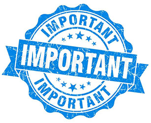

Ucrania es uno de los principales países en este momento donde se realizan más procesos de gestación subrogada. WORLD SURROGACY es una agencia ucraniana, con sede en KIEV, formada por personas que llevamos 6 años en el mundo de la gestación subrogada, con más de 300 niños nacidos como aval de nuestra gestión.
Trabajamos en 4 países: Ucrania, Rusia, Usa y Grecia.
Y tenemos una sola premisa: hacer realidad el sueño de nuestros padres. Porque se empieza a ser padre mucho antes de llegar a serlo. Contamos con un equipo de 20 personas en nuestra central en Kiev (ucrania) y un total de 8 empleados más entre Grecia y Rusia. ¿Que nos diferencia de otras agencias? el trato personalizado y humano. Aunque hay dinero de por medio, los padres no están comprando algo. Están convirtiendo en realidad su sueño, y nosotros tenemos el enorme privilegio de ser los artífices de hacerlo posible. Vuestros niños, son al fin y al cabo, un poco nuestros niños también, y los vemos crecer en las fotos o cuando los padres los traen de visita a nuestras oficinas que son su casa también.
A diferencia de otras agencias, creamos nuestros propios programas. Es decir, no revendemos programas de otras agencias o clínicas, para cobrar una comisión que encarece el proceso. De este modo, nosotros seleccionamos las madres, y podemos retribuirlas mejor que las otras clínicas, ofreciéndoles además expectativas de futuro como por ejemplo, dándoles clases de español, lo que les permite optar a puestos de trabajo mejor retribuidos en su país. Las gestantes lo son todo para nosotros, y velamos por su bienestar e integridad ante todo. Incluso por delante de los intereses de algunos padres que no respetan esta premisa básica.
